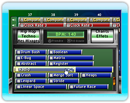
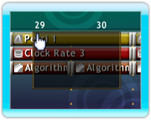
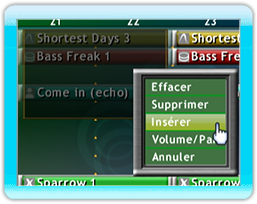

14 |
Faire de la musique |
 |
|

Maintenant que vous savez comment pré-écouter toutes les boucles fournies avec Mix Superstar vous serez sûrement impatient de faire vos premiers essais. À partir du navigateur, sélectionnez une boucle avec le bouton A et faites-la glisser, à votre guise, à n'importe quel point de l'écran du séquenceur. Pour enlever une boucle, faites-la glisser hors de l'écran.
Les boucles peuvent être très facilement copiées. Immobilisez une boucle en appuyant sur le bouton A et appuyez ensuite sur le bouton B pour insérer une copie de la boucle sur le séquenceur.
Pour copier plusieurs boucles à la fois, surlignez les boucles désirées en maintenant appuyé le bouton A sur un espace libre du séquenceur et en faisant glisser le curseur sur les boucles pour les encercler dans un champ de données rectangulaire. Vous pouvez maintenant choisir plusieurs boucles avec le bouton A et en insérer des copies avec le bouton B, selon le procédé indiqué ci-dessus.
Pour éditer plusieurs boucles d'un coup, surlignez les boucles correspondantes selon le procédé indiqué ci-dessus puis, en vous maintenant sur l'espace surligné, appuyez sur le bouton B pour afficher les options de boucles multiples. Sélectionnez Effacer pour enlever les boucles de la chanson; l'espace qu’elles occupaient sera laissé intact. Pour enlever les boucles et l'espace surligné, sélectionnez Supprimer. Pour insérer des espaces supplémentaires sur les pistes surlignées, sélectionnez Insérer et toutes les boucles existantes de la piste surlignée seront poussées vers l'avant.
Défilement et zoom Pour rapprocher ou éloigner le mixage en cours, appuyez sur le bouton + ou sur le bouton – afin de pouvoir ajuster le tempo des boucles sur votre mixage. Vous pouvez aussi faire défiler votre mixage vers la gauche ou vers la droite en utilisant la croix directionnelle ou en appuyant sur le bouton B au-dessus d’un espace libre et en faisant glisser ensuite vers la gauche ou vers la droite. |
 |
 |
 |